Геометрические дешифровочные признаки (ГДП) - это метод анализа и распознавания образов, основанный на геометрических свойствах изображений, таких как:
- Форма
- Размер
- Тень
На этой странице вы можете увидеть снимки, на которых при дешифрировании объектов используются преимущественно ГДП.
| Объект | Вид на карте | Характерная особенность |
|---|---|---|
| МГУ | 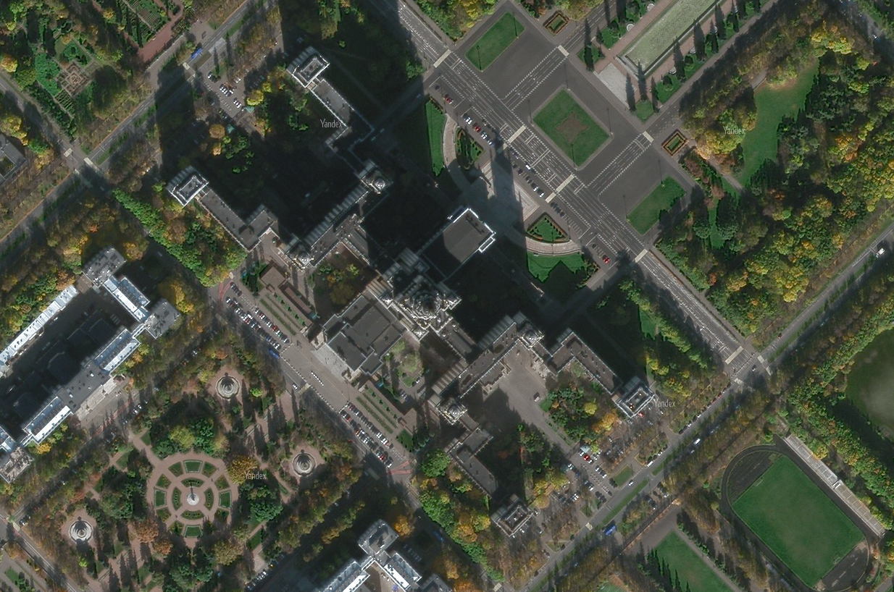 | Здание МГУ имеет характерную сложную форму расходящихся корпусов от главного входа. Многие ВУЗы и некоторые школы можно определить именно по их отличительной форме. |
| Стадион Лужники | 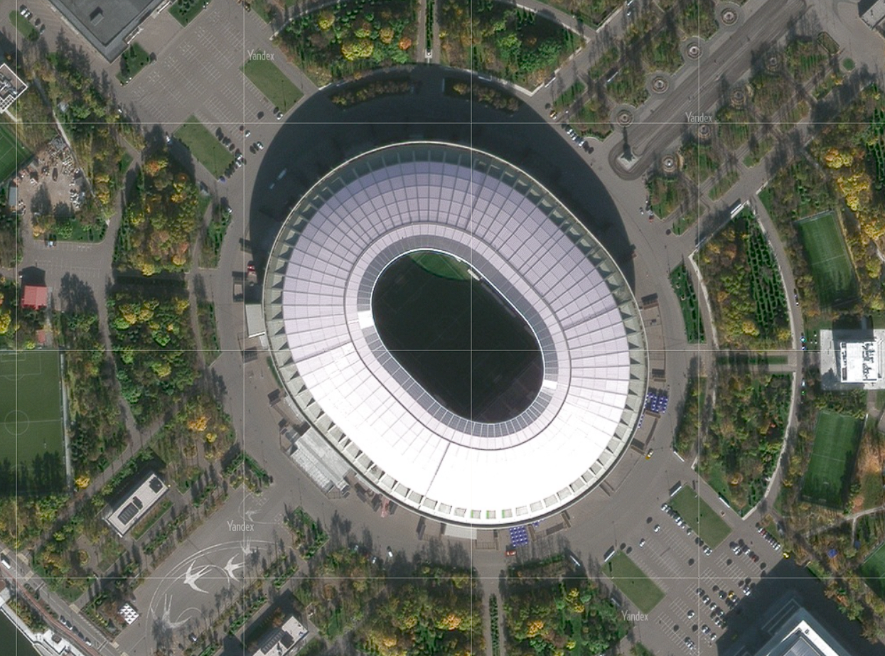 | Здание стадиона Лужники, как и большинство других крытых стадионов, имеет характерную овальную форму с аналогичной овальной формой в центре крыши, также стадионом присущи сравнительно большие размеры, как на плоскости, так и в высоту |
| РТУ МИРЭА | 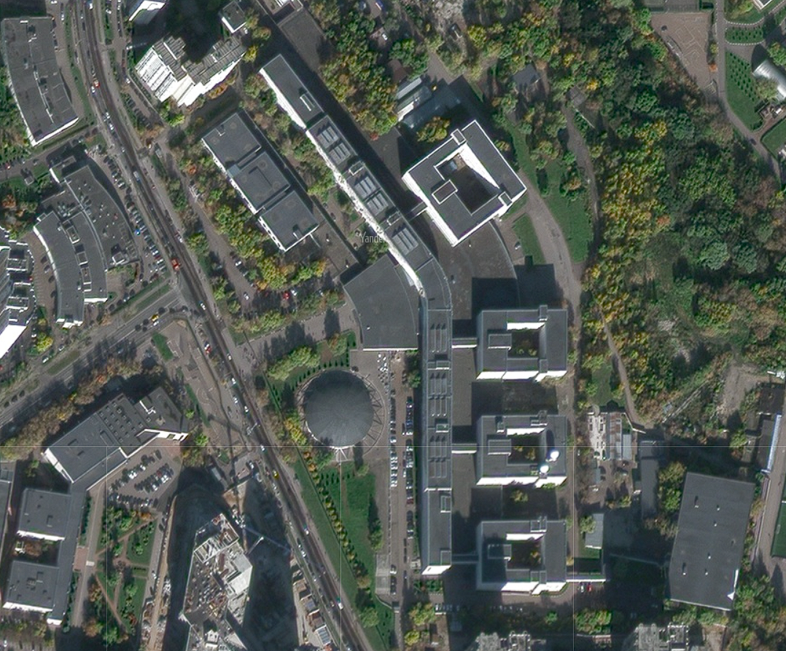 | Здание университета МИРЭА отличается наличием четырёх колодцевидных корпусов и изогнутой формой главного здания, таким образом в данном случае основным признаком является форма объекта |
| Лахта центр | 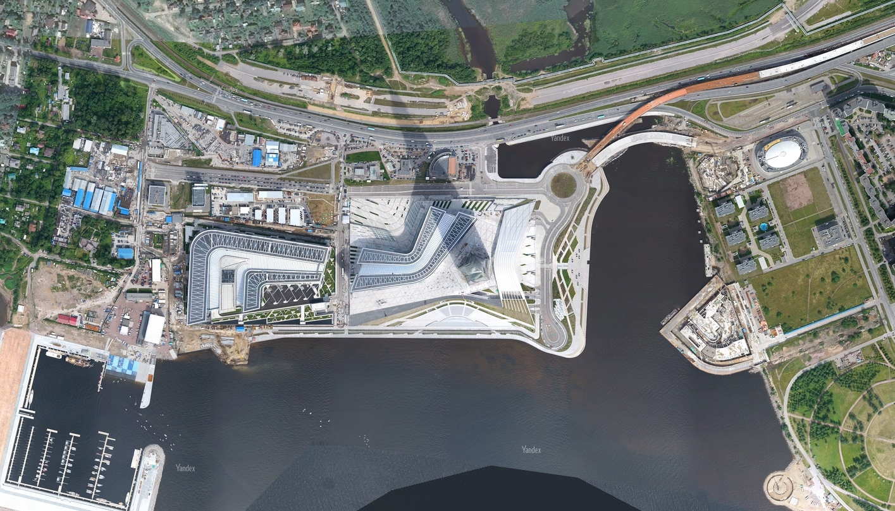 | Сравнивая размеры теней зданий, находящихся в области видимости, можно сделать вывод, что располагающееся в центре изображения сооружение, имеет сравнительно большую высоту, в разы превосходящую высоты стандартных зданий. Также опираясь на уникальные формы прилегающих с левой сторны зданий, можно понять, что это Лахта центр в Санкт-Петербурге |
| Гоночная трасса | 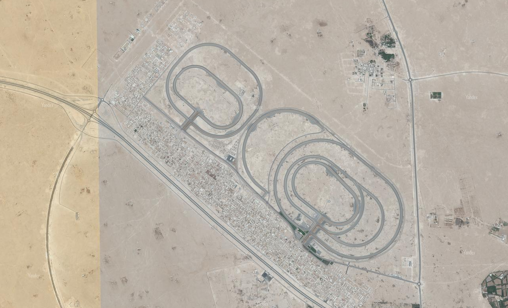 | Опираясь на округлую форму и сравнительно большой размер относительно прилегающих зданий, а также на наличие нескольких вложенных кольцевых путей, можно сделать вывод, что на данном изображении мы имеем дело с гоночной автотрассой |
| Аэропорты | 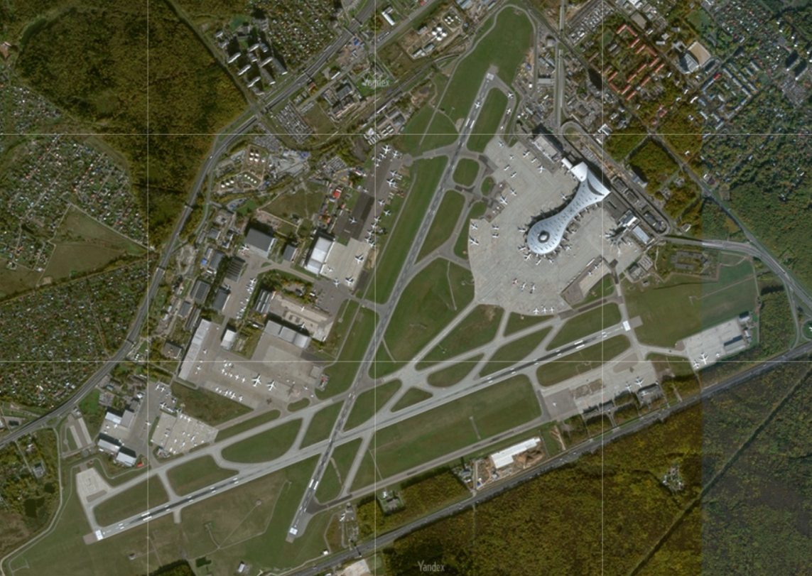 | Аэропорты имеют взлётно-посадочные полосы, характеризующиеся идеально ровными и параллельными асфальтированными участками, которые соединяются более узкими проездами, эти дороги начинаются из ниоткуда и ведут в никуда, а также имеют протяженность не более пары километров |
| Мосты | 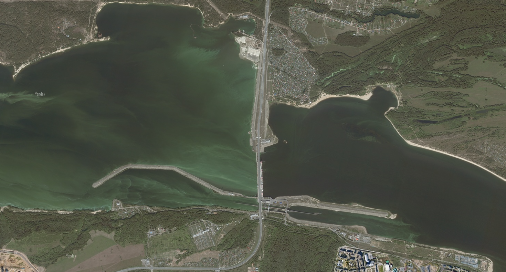 | Мосты обычно имеют форму прямой прямоугольной или дуговой линии, проходящей над водным участком и соединяющей два участка суши, благодаря чему дешифровка мостов не вызывает трудностей |
| Карьеры | 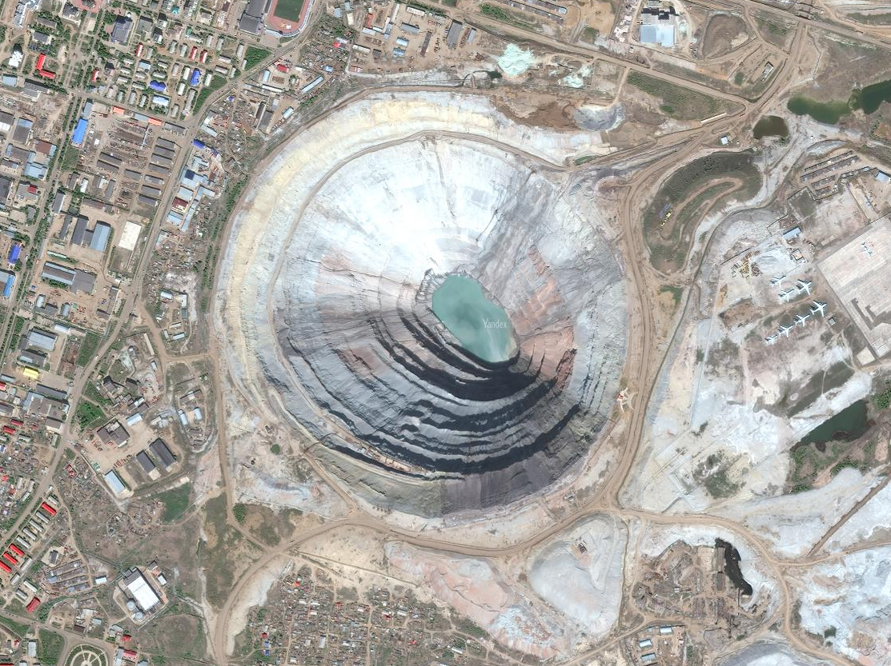 | При дешифровке карьеров особое внимание обращается на их округлые формы, а также на склоны, располагающиеся под достаточно большим углом к поверхности дна карьера. Большую точность может придать тень, отбрасываемая уровневыми склонами карьерного спуска, как на представленном изображении |
| Парковки | 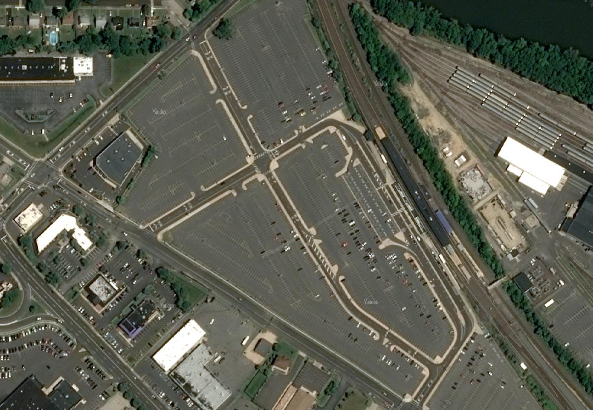 | Асфальтированные области, сравнительно большой площади, содержащие регулярную разметку (под автомобильные места), а также располагающиеся вблизи торговых центров или жилых массивов, много вероятно являются парковыми зонами |
| Причалы малых судов | 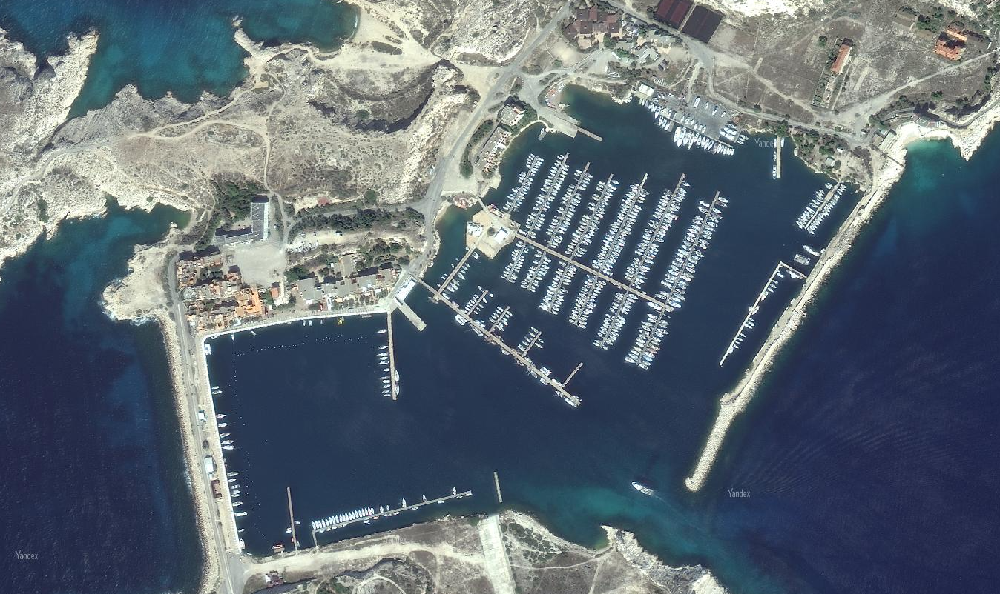 | Причалы располагаются в бухтах, образованных как естественным, так и антропогенным путём, имеют большое количество параллельных и перпендикулярных прямых. Также, среди прочих береговых линий, порты отличает наличие большого количества пришвартованных лодок характерной формы |
| Порты для крупных судов | 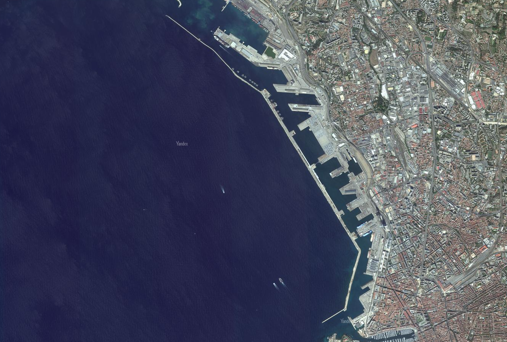 | Эти порты имеют знчительно больший размер, ввиду размеров самих танкеров/барж/лайнеров и т.п., форма берегов более угловатая, также присутствует водяной барьер, предотвращающий попадание высоких волн в место швартования |
| Пирамиды | 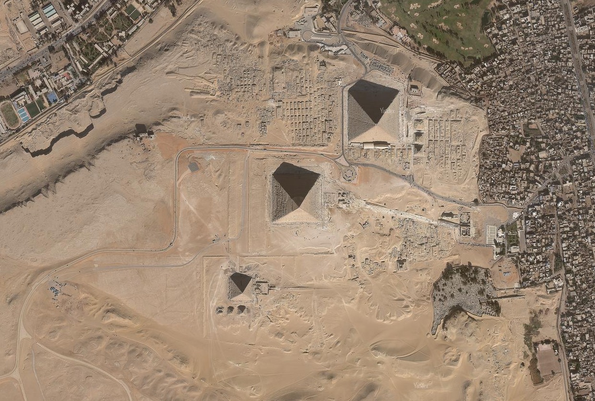 | Египетские пирамиды можно дешифрировать, опираясь на следующие признаки: квадратное основание, сходящиеся в верхней части рёбра, сравнительно большие размеры, а также отбрасываемая ими тень, свидетельствующая об их возвышении |
| Шлюзы | 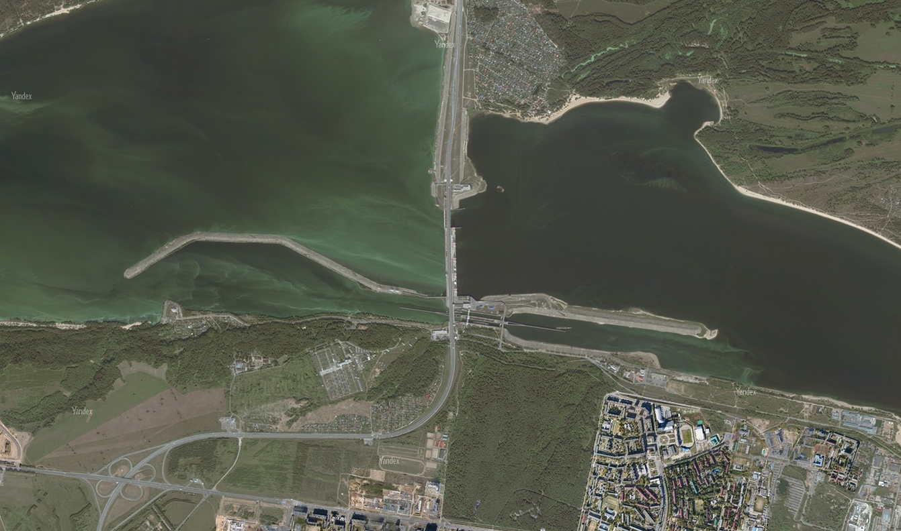 | Для шлюзов характерны небольшие прямоугольные формы, ограниченные земельными участками небольшой толщины, располагаются зачастую вблизи мостов, а также имеют по близости длинные насыпи во внутренней части реки |

|
||

|
||
|
|
||
|
|
||
|
|